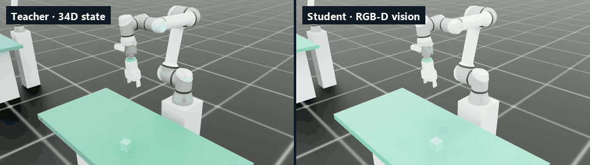

UR5e · OnRobot 2FG7 · Intel RealSense D435i
UR5e Sim2Real Bin Picking
5 cm 큐브를 집어 작업면 위 가변 목표에 놓는 과제를 NVIDIA Isaac Lab에서 학습하고, 같은 관측·행동·안전 계약을 그대로 유지한 채 실기 UR5e로 옮기는 프로젝트입니다. 상태 기반 Teacher를 PPO로 먼저 학습한 뒤, RGB-D 영상만 보는 Vision Student로 증류합니다.
| 문서 | 프로젝트 개요 |
|---|---|
| 판정 기준일 | 2026-09-25 |
| sim 봉인 평가 | ✓ Teacher · Student 통과 |
| 실기 평가 | ✕ 파지 0 / 10 · 재실험 예정 |
| 배포 레인 | 랩 실험 레인 (adopted: false) |
00현재 판정
Teacher v2(34D, 대칭 그리퍼)와 Vision Student가 모두 sim 봉인 평가(seed 42–45 × 512 = 2,048 에피소드, 보조 없음)를 통과했습니다. 실기에서는 Vision Student를 10회 실행해 파지에 한 번도 성공하지 못했고(0 / 10), 원인 분석 후 재실험할 예정입니다. 정식 릴리스 레인(패리티·지연 벤치마크·커밋 동결)은 거치지 않았습니다.

01실기 배포 — Vision Student 10회 평가
| 실행 | sim에서 학습한 Vision Student, 실기 10회 |
|---|---|
| 파지 성공 | 0 / 10 |
| 실패 양상 | 카메라 영상만으로 큐브에 접근·하강했지만 집지 못함. 정책 내부의 held latch는 파지로 판정한 false grasp |
예상 원인
- 핑거 폭 · 파지력 피드백 없음 — 명령 상태만으로는 미파지를 구별하지 못한다
- 근접 시 카메라 FOV 이탈과 depth 결측
- 그리퍼 지연, TCP 오프셋(미보정)
다음 단계
핑거 폭 · TCP 높이 · 깊이 영상을 단계별로 기록해 원인을 분리한 뒤 재실험합니다. 원인이 해소되기 전까지 실기 자동 작업 배포는 보류합니다.
02작업 셀
툴 체인
- UR5e 6축 협동 로봇, base 고정RTDE servoL · 20 Hz
- Magbot TCW1 툴 체인저tool0 → 86.5 mm
- 브라켓 + Intel RealSense D435i eye-in-hand RGB-D848 × 480 · depth→color 정렬
- OnRobot 2FG7 평행 그리퍼, 양 손가락 대칭 구동내측 폭 74 / 34 mm · DO 펄스 개폐
기하 (base frame, m)
| 물체 | 한 변 0.05 큐브 1개 |
|---|---|
| 작업면 | 중심 (−0.50, 0.00) · 0.58 × 1.25 × 0.04 상면 z = −0.0375 |
| 목표 구역 | x ∈ [−0.725, −0.275] y ∈ [−0.300, 0.300] · z = −0.0125 |
| 안전 AABB | (−0.75, −0.35, −0.0375) – (−0.21, 0.35, 0.60) |
| TCP 하강 바닥 | z = −0.0075 |
전체 치수도는 저장소의 ur5e_workcell_drawing.html에 있습니다.
03파이프라인 — Phase 0 → 4
-
PHASE 0
환경 · scene smoke
- Isaac Sim 5.1 + Isaac Lab v2.3.2 기동 확인
- flange–TCW1–2FG7 체인, 카메라 방향, 작업면 육안 확인
- RL 이전 파지 물리 진단
Phase0/scene_bin_ur5e.py -
PHASE 1
State Teacher · PPO
- 배포 가능한 34D 관측만 쓰는 actor
- critic은 sim 참값을 더한 비대칭 관측
- 인식 오차 DR, 실행 속도 상한 clamp
- 16,384 env × 25k iter
scripts/train.ps1 -Preset Teacher -
PHASE 2
RGB-D Vision Student
- 채택 Teacher의 행동을 정답으로 증류 (rsl-rl DistillationRunner)
- RGB-D 112² + 고유수용 관측
- 512 env × 25k iter
scripts/train.ps1 -Preset Distill -
PHASE 3
캘리브레이션 · sim 리허설
- TCP offset, ChArUco hand-eye, scene registration
- 실기 배포 코드 경로를 sim 로봇에 물려 리허설
deployment/Calib_*.py
Phase3/SimDeploy_Rehearsal.py -
PHASE 4
fail-closed 실기
- SafetyGuard 속도·작업영역 clamp, e-stop latch
- 증거·캘리브레이션이 없으면 실행을 거부
- 모션은 명시적 인가 플래그로만
Phase4/Run_Task_Teacher.py
Phase4/Run_Task.py
04관측 · 행동 계약
Teacher actor 관측
- 관절 위치 · 속도12
- gripper_command_state1
- TCP pose7
- 목표 위치3
- 큐브 위치 추정치3
- held latch1
- 직전 행동7
- 합계34D
카메라 영상은 보지 않습니다. 큐브 위치는 참값이 아니라, 실기 depth 인식 모듈과 같은 규칙(결측·편향·노이즈)으로 만든 추정치입니다.
Student actor 관측
- depth 1 × 112 × 11212,544
- RGB 3 × 112 × 11237,632
- 관절 위치 · 속도12
- gripper_command_state1
- TCP pose7
- 목표 위치3
- 직전 행동7
- 합계50,206D
전처리는 common/obs_preprocess.py 하나를 sim과 실기가 공유하고, obs_spec.json이 순서·크기·config hash를 봉인합니다.
행동
- TCP Δ위치 (base frame)3
- TCP Δ축각3
- 그리퍼 (< 0 이면 close)1
- 합계7D
스텝당 스케일 0.0125 m / 0.025 rad는 배포 SafetyGuard 상한(0.25 m/s · 0.5 rad/s × 0.05 s)과 같습니다. sim은 Differential IK, 실기는 같은 의미의 ActionMapper → servoL로 실행합니다.
05배포 레인
모듈형 — 인식 모듈 + Teacher v2권장 시작점
- D435i depth
- 큐브 위치 추정
- Teacher 34D → 7D
- SafetyGuard
- servoL
인식 실패가 화면에 바로 드러나 원인(캘리브레이션 · 작업면 높이 · 조명)을 분리해 고칠 수 있습니다.
Phase4/Run_Task_Teacher.py · exported_experimental/teacher_177c7eefed0f/
end-to-end — Vision Student
- D435i RGB-D
- 공유 전처리
- Student 50,206D → 7D
- SafetyGuard
- servoL
중간 단계 없이 영상만으로 동작합니다. 단순하지만 실패 원인을 분리하기 어려워 Teacher로 파이프라인을 먼저 확인한 뒤 넘어갑니다.
Phase4/Run_Task.py · exported_experimental/student_8b415b9b0831/
■ 정식 릴리스 레인 — 차단(P0) · 두 번들은 랩 실험 레인(adopted: false)이라 사람이 e-stop 앞에서 --yes-i-am-at-the-estop로 명시 인가할 때만 움직입니다. 정식 릴리스(adopted: true, Vision Student 전용)는 motion_safety 증거 collector 부재, RTDE↔RealSense 타임스탬프 동기화 미증명, 2FG7 폭 feedback 부재로 막혀 있으며 Phase4/Deploy_Real.py는 설정을 읽기 전에 종료하는 hard-block stub입니다.
06채택 게이트와 봉인 평가
| Teacher | Student | |
|---|---|---|
| 시드별 최소 | ≥ 487 / 512 | ≥ 384 / 512 |
| pooled Wilson 하한 | ≥ 95% | ≥ 75% |
| seed 42 · 43 · 44 · 45 | 512 · 512 · 512 · 512 | 482 · 487 · 480 · 487 |
| pooled (Wilson 하한) | 100.00% (99.81%) | 94.53% (93.46%) |
| 채택 checkpoint | model_24200 | model_24000 |
- 후보 선발 — 순간 보상이 아니라 게이트가 실제로 재는
placed_success의 trailing-200 median 상위 5개(최종 checkpoint 고정, 간격 500). - 평가 — seed 42–45 각각 정확히 512 에피소드, assist·pre-grasp 없음, 인식 오차 DR과 실행 제한 적용.
- 권한 —
adoption.json의status: adopted와 정확한 checkpoint SHA-256만 다음 단계의 입력이 됩니다. - 계보 — 학습·평가·채택·증류는 같은 Git commit · config hash · 스택에서만 성립하고, 예외는 명시적 인자로만 허용합니다.
07실패 원장에서 — F01–F100 중 네 건
순간 보상 선발이 채택을 전멸시켰다
성공 에피소드는 조기 종료되어 보상 합이 깎이므로, mean_reward는 성공률이 오르기 직전에 정점을 찍습니다. 그 정점으로 고른 후보는 전부 게이트에서 떨어졌습니다.
선발 지표와 게이트 지표가 다르면 그 간극은 언젠가 반드시 벌어진다.
sim 100% Teacher가 실기 신호를 볼 수 없었다
구 42D Teacher는 실제 손가락 위치·물체 속도·접촉력처럼 실기에서 만들 수 없는 신호를 관측했습니다. 34D 배포 가능 관측, 인식 오차 DR, 실행 속도 상한 정합으로 다시 설계했습니다.
학습에서 한 번도 겪지 않은 갭은 실기 성공을 기대할 근거가 없다.
한쪽 손가락으로 집고도 99.6%
변환된 USD에서 오른쪽 손가락이 드라이브 없는 수동 관절이었고, 정책은 큐브를 반대쪽 손가락에 밀어붙여 집는 법을 배웠습니다. URDF를 고쳐 재변환하고 대칭 프로브를 채택 절차에 넣었습니다.
파지 정합은 성공률로 드러나지 않는다 — 산출물을 직접 읽고 영상·관절 궤적을 검사한다.
DLSS 경로에서 RGB만 죽었다
타일 128개 이상 + headless DLSS에서 RGB가 검정·깜빡임으로 깨졌고, depth는 정상이었습니다. Student는 깨진 입력에 적응해 학습 곡선이 좋아 보였습니다. antialiasing을 끄고 학습 기동 시 렌더 가드를 걸었습니다.
렌더 결함은 loss로 드러나지 않는다 — 채널별 공간 통계를 학습 시작 시점에도 검사한다.
전체 원장(문제 · 기전 · 조치 · 교훈)은 PROJECT_LOG.md §6에 있습니다.
08고정 스택
| 학습 OS | Windows 11 native (WSL 비지원) |
|---|---|
| Python | 3.11.15 · conda isaac51 |
| 시뮬레이터 | NVIDIA Isaac Sim 5.1.0 (pip) · Isaac Lab v2.3.2 (source checkout) |
| 강화학습 | rsl-rl-lib 3.1.2 · PyTorch 2.7.0 + CUDA 12.8 |
| GPU | 기준 RTX 3060 Ti 8 GB · 본 실험 RTX 5070 Ti 16 GB |
| 실기 PC | Windows 11, conda env_ur_real, Isaac 미설치 |
| 실기 SDK | ur-rtde 1.6.2 · pyrealsense2 2.58 |
09빠른 시작
모든 경로는 저장소 루트 기준 상대 경로라 어느 폴더에 clone해도 됩니다. 명령은 저장소 루트에서 PowerShell로 실행합니다. 학습·시뮬레이션은 Windows 11 + NVIDIA GPU(VRAM 8 GB 이상), 실기 배포는 Isaac 없는 Windows 11 PC가 필요합니다.
git clone https://github.com/ChangeDayAndNight/UR5e_SIM2REAL-public.git
cd UR5e_SIM2REAL-public1 · 시뮬레이션에서 학습된 정책 보기
# 처음 한 번: conda 환경 isaac51에 Isaac Sim 5.1 · Isaac Lab v2.3.2 · PyTorch · 프로젝트 확장 설치
powershell -ExecutionPolicy Bypass -File scripts/bootstrap_training.ps1
conda activate isaac51
python Phase3/SimDeploy_Rehearsal_Teacher.py --policy-dir exported_experimental/teacher_177c7eefed0f --gui --episodes 52 · 처음부터 학습
powershell -ExecutionPolicy Bypass -File scripts/train.ps1 -Preset Teacher -Smoke
powershell -ExecutionPolicy Bypass -File scripts/train.ps1 -Preset Teacher -NumEnvs 16384 -MaxIterations 25000 -Seed 42 -Headless
powershell -ExecutionPolicy Bypass -File scripts/train.ps1 -Preset Distill -DistillFrom <TEACHER_MODEL_PT> -NumEnvs 512 -MaxIterations 25000 -Seed 42 -Headless3 · 실기 배포 (Isaac Sim 불필요)
powershell -ExecutionPolicy Bypass -File setup.ps1
conda activate env_ur_real
# 1) configs\real.local.yaml 에 로봇 IP · 카메라 시리얼 입력, TCP offset · hand-eye 캘리브레이션
# 2) 추론만(모션 없음) — 검출률 30% 미만이면 3)으로 가지 않는다
python Phase4\Run_Task_Teacher.py --policy-dir exported_experimental\teacher_177c7eefed0f `
--dry-run --verbose-perception --target-pos="-0.50,0.15,-0.0125"
# 3) 실제 모션 — 사람이 e-stop 앞에서
python Phase4\Run_Task_Teacher.py --policy-dir exported_experimental\teacher_177c7eefed0f `
--yes-i-am-at-the-estop --home-first --target-pos="-0.50,0.15,-0.0125"10저장소 구조
- Phase0/ … Phase4/
- 단계별 실행 스크립트 — scene smoke, Teacher 학습·평가, Student 증류·export, 리허설, 실기 러너
- source/ur5e_binpick/
- Isaac Lab 확장 패키지 — 태스크, MDP, 에이전트 설정
- common/
- sim·실기 공유 순수 로직 — 관측 전처리, 행동 매핑, 그리퍼 명령 상태, 큐브 인식
- sim/ · real/
- 같은 인터페이스의 sim / 실기 로봇·카메라 어댑터
- deployment/
- 캘리브레이션, 패리티 검증, 배포 번들 빌드, 배포 PC 런북
- configs/
- common · sim · dr · safety · calib — 계약을 소유하는 설정 파일
- scripts/
- 학습 런처, preflight, 채택 파이프라인, 저장소 검증
- analysis/ · diagnostics/
- 평가 통계·논문 표 / 물리·렌더·가시성 프로브
- calibration/
- hand-eye ChArUco 캡처와 번들 조정
- assets/
- UR5e + 2FG7 URDF·USD, D435i mesh (NOTICE · LICENSE 보존)
- exported_experimental/
- sim 채택 정책 번들 2종 (Teacher · Student)
- tests/
- Isaac·하드웨어 없이 도는 순수 pytest
11한계와 남은 일
- 실기 0/10Vision Student 실기 10회 평가에서 파지 0 / 10(false grasp). sim 성능이 아직 실기로 옮겨지지 않았고, 원인을 분리한 뒤 재실험합니다.
- 미검증TCP offset은 sim 체인 값(
calibrated: false)이고, hand-eye v7(27-view ChArUco, RMS 2.01 mm)은 기계 보정 뒤 실기 재검증이 필요합니다. - 하드웨어현재 브라켓에서는 그리퍼 바로 아래 큐브가 카메라 세로 FOV 밖입니다. 정책은 이 결측 구간을 학습에서 경험했습니다.
- P02FG7은 DO 펄스 구동이라 실제 폭·파지 feedback이 없습니다.
gripper_command_state는 명령 이력이지 파지 증거가 아닙니다. - P0RTDE controller 시계와 RealSense 획득 시계의 동기화(PTP/하드웨어 타임스탬프)가 증명되지 않았습니다.
- P0신뢰할 수 있는
motion_safety증거 collector와 승인 발행 절차가 없어 정식 릴리스의 모션 승인이 불가능합니다.